Code
source("../_globals.r")DSAN 5000: Data Science and Analytics
Section 02
source("../_globals.r")cb_palette = ["#E69F00", "#56B4E9", "#009E73", "#F0E442", "#0072B2", "#D55E00", "#CC79A7"]
from IPython.display import Markdown
def disp(df, floatfmt='g', include_index=True):
return Markdown(
df.to_markdown(
floatfmt=floatfmt,
index=include_index
)
)
def summary_to_df(summary_obj, corner_col = ''):
reg_df = pd.DataFrame(summary_obj.tables[1].data)
reg_df.columns = reg_df.iloc[0]
reg_df = reg_df.iloc[1:].copy()
# Save index col
index_col = reg_df['']
# Drop for now, so it's all numeric
reg_df.drop(columns=[''], inplace=True)
reg_df = reg_df.apply(pd.to_numeric)
my_round = lambda x: round(x, 2)
reg_df = reg_df.apply(my_round)
numeric_cols = reg_df.columns
# Add index col back in
reg_df.insert(loc=0, column=corner_col, value=index_col)
# Sigh. Have to escape | characters?
reg_df.columns = [c.replace("|","\|") for c in reg_df.columns]
return reg_df\[ \DeclareMathOperator*{\argmax}{argmax} \DeclareMathOperator*{\argmin}{argmin} \newcommand{\bigexpect}[1]{\mathbb{E}\mkern-4mu \left[ #1 \right]} \newcommand{\definedas}{\overset{\text{defn}}{=}} \newcommand{\definedalign}{\overset{\phantom{\text{defn}}}{=}} \newcommand{\eqeventual}{\overset{\text{eventually}}{=}} \newcommand{\expect}[1]{\mathbb{E}[#1]} \newcommand{\expectsq}[1]{\mathbb{E}^2[#1]} \newcommand{\fw}[1]{\texttt{#1}} \newcommand{\given}{\mid} \newcommand{\green}[1]{\color{green}{#1}} \newcommand{\heads}{\outcome{heads}} \newcommand{\iqr}{\text{IQR}} \newcommand{\kl}{\text{KL}} \newcommand{\lik}{\mathcal{L}} \newcommand{\mle}{\textsf{ML}} \newcommand{\orange}[1]{\color{orange}{#1}} \newcommand{\outcome}[1]{\textsf{#1}} \newcommand{\param}[1]{{\color{purple} #1}} \newcommand{\paramDist}{\param{\boldsymbol\theta_\mathcal{D}}} \newcommand{\pgsamplespace}{\{\green{1},\green{2},\green{3},\purp{4},\purp{5},\purp{6}\}} \newcommand{\prob}[1]{P\left( #1 \right)} \newcommand{\purp}[1]{\color{purple}{#1}} \newcommand{\red}[1]{\color{red}#1} \newcommand{\spacecap}{\; \cap \;} \newcommand{\spacewedge}{\; \wedge \;} \newcommand{\tails}{\outcome{tails}} \newcommand{\Var}[1]{\text{Var}[#1]} \newcommand{\bigVar}[1]{\text{Var}\mkern-4mu \left[ #1 \right]} \]
Today’s Planned Schedule (Section 02):
| Start | End | Topic | Recording | |
|---|---|---|---|---|
| Lecture | 12:30pm | 1:00pm | Quiz Prep → | |
| 1:00pm | 1:20pm | Quiz 5.1 | ||
| 1:20pm | 1:40pm | Decision Trees and Entropy → | ||
| 1:40pm | 2:00pm | Decision Trees for Classification → | ||
| Break! | 2:00pm | 2:10pm | ||
| 2:10pm | 2:40pm | Decision Trees for Regression → | ||
| 2:40pm | 3:00pm | Student Presentation |
| \(F_1\) | \(F_2\) | \(F_3\) |
|---|---|---|
| 0.8 | 0.9 | 0.1 |
| 0.6 | 0.4 | 0.1 |
→
| \(F_1\) | \(F_2\) | \(F_3\) |
|---|---|---|
| 0.8 | 0.9 | 0.1 |
| 0.6 | 0.4 | 0.1 |
→
| \(F_1\) | \(F_3\) |
|---|---|
| 0.8 | 0.1 |
| 0.6 | 0.1 |
| \(F_1\) | \(F_2\) | \(F_3\) |
|---|---|---|
| 0.8 | 0.9 | 0.1 |
| 0.6 | 0.4 | 0.1 |
→
\[ \begin{align*} {\color{#56b4e9}F'_{12}} &= \frac{{\color{#e69f00}F_1} + {\color{#e69f00}F_2}}{2} \\ {\color{#56b4e9}F'_{23}} &= \frac{{\color{#e69f00}F_2} + {\color{#e69f00}F_3}}{2} \end{align*} \]
→
| \(F'_{12}\) | \(F'_{23}\) |
|---|---|
| 0.85 | 0.50 |
| 0.50 | 0.25 |
library(readr)
library(ggplot2)
gdp_df <- read_csv("assets/gdp_pca.csv")
dist_to_line <- function(x0, y0, a, c) {
numer <- abs(a * x0 - y0 + c)
denom <- sqrt(a * a + 1)
return(numer / denom)
}
# Finding PCA line for industrial vs. exports
x <- gdp_df$industrial
y <- gdp_df$exports
lossFn <- function(lineParams, x0, y0) {
a <- lineParams[1]
c <- lineParams[2]
return(sum(dist_to_line(x0, y0, a, c)))
}
o <- optim(c(0, 0), lossFn, x0 = x, y0 = y)
ggplot(gdp_df, aes(x = industrial, y = exports)) +
geom_point(size=g_pointsize/2) +
geom_abline(aes(slope = o$par[1], intercept = o$par[2], color="pca"), linewidth=g_linewidth, show.legend = TRUE) +
geom_smooth(aes(color="lm"), method = "lm", se = FALSE, linewidth=g_linewidth, key_glyph = "blank") +
scale_color_manual(element_blank(), values=c("pca"=cbPalette[2],"lm"=cbPalette[1]), labels=c("Regression","PCA")) +
dsan_theme("half") +
remove_legend_title() +
labs(
title = "PCA Line vs. Regression Line",
x = "Industrial Production (% of GDP)",
y = "Exports (% of GDP)"
)
ggplot(gdp_df, aes(pc1, .fittedPC2)) +
geom_point(size = g_pointsize/2) +
geom_hline(aes(yintercept=0, color='PCA Line'), linetype='solid', size=g_linesize) +
geom_rug(sides = "b", linewidth=g_linewidth/1.2, length = unit(0.1, "npc"), color=cbPalette[3]) +
expand_limits(y=-1.6) +
scale_color_manual(element_blank(), values=c("PCA Line"=cbPalette[2])) +
dsan_theme("half") +
remove_legend_title() +
labs(
title = "Exports vs. Industry in Principal Component Space",
x = "First Principal Component (Axis of Greatest Variance)",
y = "Second PC"
)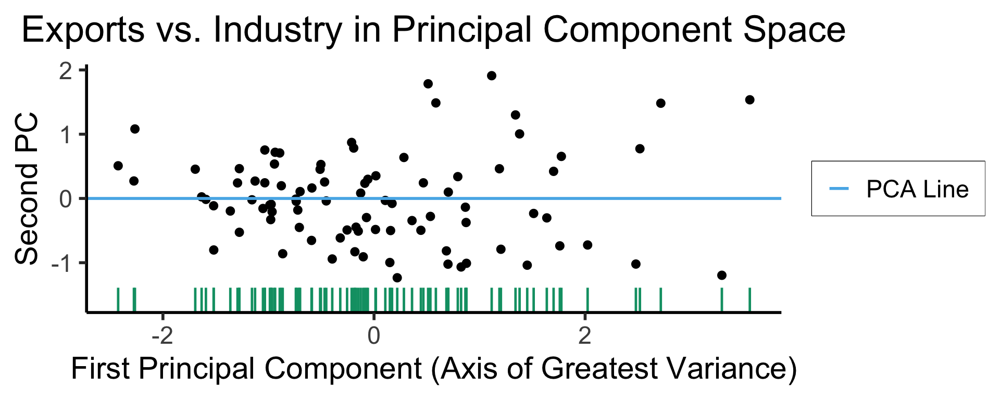
library(dplyr)
library(tidyr)
plot_df <- gdp_df %>% select(c(country_code, pc1, agriculture, military))
long_df <- plot_df %>% pivot_longer(!c(country_code, pc1), names_to = "var", values_to = "val")
long_df <- long_df |> mutate(
var = case_match(
var,
"agriculture" ~ "Agricultural Production",
"military" ~ "Military Spending"
)
)
ggplot(long_df, aes(x = pc1, y = val, facet = var)) +
geom_point() +
facet_wrap(vars(var), scales = "free") +
dsan_theme("full") +
labs(
x = "Industrial-Export Dimension (First Principal Component)",
y = "% of GDP"
)
library(tidyverse)
library(MASS)
library(ggforce)
N <- 300
Mu <- c(0, 0)
var_x <- 3
var_y <- 1
Sigma <- matrix(c(var_x, 0, 0, var_y), nrow=2)
data_df <- as_tibble(mvrnorm(N, Mu, Sigma, empirical=TRUE))
colnames(data_df) <- c("x","y")
# data_df <- data_df |> mutate(
# within_5 = x < 5,
# within_sq5 = x < sqrt(5)
# )
#nrow(data_df |> filter(within_5)) / nrow(data_df)
#nrow(data_df |> filter(within_sq5)) / nrow(data_df)
# And plot
ggplot(data_df, aes(x=x, y=y)) +
# 68% ellipse
# stat_ellipse(geom="polygon", type="norm", linewidth=g_linewidth, level=0.68, fill=cbPalette[1], alpha=0.5) +
# stat_ellipse(type="norm", linewidth=g_linewidth, level=0.68) +
geom_ellipse(
aes(x0=0, y0=0, a=var_x, b=var_y, angle=0),
linewidth = g_linewidth
) +
# geom_ellipse(
# aes(x0=0, y0=0, a=sqrt(5), b=1, angle=0),
# linewidth = g_linewidth,
# geom="polygon",
# fill=cbPalette[1], alpha=0.2
# ) +
# # 95% ellipse
# stat_ellipse(geom="polygon", type="norm", linewidth=g_linewidth, level=0.95, fill=cbPalette[1], alpha=0.25) +
# stat_ellipse(type="norm", linewidth=g_linewidth, level=0.95) +
# # 99.7% ellipse
# stat_ellipse(geom='polygon', type="norm", linewidth=g_linewidth, level=0.997, fill=cbPalette[1], alpha=0.125) +
# stat_ellipse(type="norm", linewidth=g_linewidth, level=0.997) +
# Lines at x=0 and y=0
geom_vline(xintercept=0, linetype="dashed", linewidth=g_linewidth / 2) +
geom_hline(yintercept=0, linetype="dashed", linewidth = g_linewidth / 2) +
geom_point(
size = g_pointsize / 3,
#alpha=0.5
) +
geom_rug(length=unit(0.5, "cm"), alpha=0.75) +
geom_segment(
aes(x=-var_x, y=0, xend=var_x, yend=0, color='PC1'),
linewidth = 1.5 * g_linewidth,
arrow = arrow(length = unit(0.1, "npc"))
) +
geom_segment(
aes(x=0, y=-var_y, xend=0, yend=var_y, color='PC2'),
linewidth = 1.5 * g_linewidth,
arrow = arrow(length = unit(0.1, "npc"))
) +
dsan_theme("half") +
coord_fixed() +
remove_legend_title() +
scale_color_manual(
"PC Vectors",
values=c('PC1'=cbPalette[1], 'PC2'=cbPalette[2])
) +
scale_x_continuous(breaks=seq(-5,5,1), limits=c(-5,5))
\[ \mathbf{\Sigma} = \begin{bmatrix} {\color{#e69f00}3} & 0 \\ 0 & {\color{#56b4e9}1} \end{bmatrix} \]
Two solutions to \(\mathbf{\Sigma}\mathbf{x} = \lambda \mathbf{x}\):
library(tidyverse)
library(MASS)
N <- 250
Mu <- c(0,0)
Sigma <- matrix(c(2,1,1,2), nrow=2)
data_df <- as_tibble(mvrnorm(N, Mu, Sigma))
colnames(data_df) <- c("x","y")
# Start+end coordinates for the transformed vectors
pc1_rc <- (3/2)*sqrt(2)
pc2_rc <- (1/2)*sqrt(2)
ggplot(data_df, aes(x=x, y=y)) +
geom_ellipse(
aes(x0=0, y0=0, a=var_x, b=var_y, angle=pi/4),
linewidth = g_linewidth,
#fill='grey', alpha=0.0075
) +
geom_vline(xintercept=0, linetype="dashed", linewidth=g_linewidth / 2) +
geom_hline(yintercept=0, linetype="dashed", linewidth = g_linewidth / 2) +
geom_point(
size = g_pointsize / 3,
#alpha=0.7
) +
geom_rug(
length=unit(0.35, "cm"), alpha=0.75
) +
geom_segment(
aes(x=-pc1_rc, y=-pc1_rc, xend=pc1_rc, yend=pc1_rc, color='PC1'),
linewidth = 1.5 * g_linewidth,
arrow = arrow(length = unit(0.1, "npc"))
) +
geom_segment(
aes(x=pc2_rc, y=-pc2_rc, xend=-pc2_rc, yend=pc2_rc, color='PC2'),
linewidth = 1.5 * g_linewidth,
arrow = arrow(length = unit(0.1, "npc"))
) +
dsan_theme("half") +
remove_legend_title() +
coord_fixed() +
scale_x_continuous(breaks=seq(-4,4,2))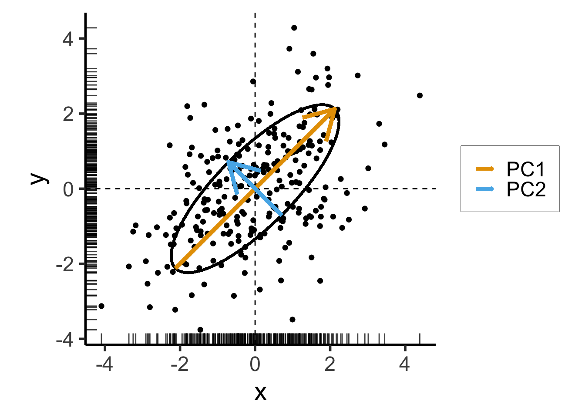
\[ \mathbf{\Sigma}' = \begin{bmatrix} 2 & 1 \\ 1 & 2 \end{bmatrix} \]
Still two solutions to \(\mathbf{\Sigma}'\mathbf{x} = \lambda \mathbf{x}\):
For those interested in how we obtained \(\mathbf{\Sigma}'\) with same eigenvalues but different eigenvectors from \(\mathbf{\Sigma}\), see the appendix slide.
Takeaway 1: Regardless of the coordinate system,
If we project each \(X_i\) onto \(N\) principal component axes:
Datapoints in PC space are linear combinations of the original datapoints! (← Takeaway 2a)
\[ X'_i = \alpha_1X_1 + \cdots + \alpha_nX_n, \]
where \(\forall i \left[\alpha_i \neq 0\right]\)
We are just “re-plotting” our original data in PC space via change of coordinates
Thus we can recover the original data from the PC data
If we project \(X_i\) onto \(M < N\) principal component axes:
\[ \text{Perp}(P_i) = 2^{H(P_i)} \]
High perplexity \(\iff\) high entropy (eventually Gaussian ball will grow so big that all other points will be equally likely!). So, vary perplexity, see how plot changes
See here for an absolutely incredible interactive walkthrough of t-SNE!

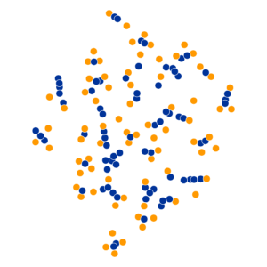


| General Questions | Specific Questions |
|---|---|
| Is it a physical object? | Is it a soda can? |
| Is it an animal? | Is it a cat? |
| Is it bigger than a house? | Is it the planet Mercury? |
For linguistics fans: if a word \(x\) is one level “more general” than another word \(y\) (e.g., the word “camel” is one level more general than “bactrian camel”, a camel with two humps), we say that \(x\) is a hypernym of \(y\), and that \(y\) is a hyponym of \(x\). The WordNet project is a big tree of hypernym/hyponym relationships among all English words, where “entity” is the root node of the tree.
| \(\text{Choice}\) | Tree | Bird | Car |
| \(\Pr(\text{Choice})\) | 0.25 | 0.25 | 0.50 |
Example adapted from this essay by Simon DeDeo!
\[ \begin{align*} &\mathbb{E}[\text{\# Moves}] \\ =\,&1 \cdot \Pr(\text{Car}) + 2 \cdot \Pr(\text{Bird}) \\ &+ 2 \cdot \Pr(\text{Tree}) \\ =\,&1 \cdot 0.5 + 2\cdot 0.25 + 2\cdot 0.25 \\ =\,&1.5 \end{align*} \]
\[ \begin{align*} &\mathbb{E}[\text{\# Moves}] \\ =\,&1 \cdot \Pr(\text{Bird}) + 2 \cdot \Pr(\text{Car}) \\ &+ 2 \cdot \Pr(\text{Tree}) \\ =\,&1 \cdot 0.25 + 2\cdot 0.5 + 2\cdot 0.25 \\ =\,&1.75 \end{align*} \]
\[ \begin{align*} &\mathbb{E}[\text{\# Moves}] \\ =\,&1 \cdot \Pr(\text{Bird}) + 3 \cdot \Pr(\text{Car}) \\ &+ 3 \cdot \Pr(\text{Tree}) \\ =\,&1 \cdot 0.25 + 3\cdot 0.5 + 3\cdot 0.25 \\ =\,&2.5 \end{align*} \]
\[ \begin{align*} H(X) &= -\sum_{i=1}^N \Pr(X = i)\log_2\Pr(X = i) \end{align*} \]
\[ \begin{align*} H(X) &= -\left[ \Pr(X = \text{Car}) \log_2\Pr(X = \text{Car}) \right. \\ &\phantom{= -[ } + \Pr(X = \text{Bird})\log_2\Pr(X = \text{Bird}) \\ &\phantom{= -[ } + \left. \Pr(X = \text{Tree})\log_2\Pr(X = \text{Tree})\right] \\ &= -\left[ (0.5)(-1) + (0.25)(-2) + (0.25)(-2) \right] = 1.5~🧐 \end{align*} \]
\[ \begin{align*} \mathbb{E}[\text{\# Moves}] &= 1 \cdot (1/3) + 2 \cdot (1/3) + 2 \cdot (1/3) \\ &= \frac{5}{3} \approx 1.667 \end{align*} \]
\[ \begin{align*} H(X) &= -\left[ \Pr(X = \text{Car}) \log_2\Pr(X = \text{Car}) \right. \\ &\phantom{= -[ } + \Pr(X = \text{Bird})\log_2\Pr(X = \text{Bird}) \\ &\phantom{= -[ } + \left. \Pr(X = \text{Tree})\log_2\Pr(X = \text{Tree})\right] \\ &= -\left[ \frac{1}{3}\log_2\left(\frac{1}{3}\right) + \frac{1}{3}\log_2\left(\frac{1}{3}\right) + \frac{1}{3}\log_2\left(\frac{1}{3}\right) \right] \approx 1.585~🧐 \end{align*} \]
The smallest possible number of levels \(L^*\) for a script based on RV \(X\) is exactly
\[ L^* = \lceil H(X) \rceil \]
Intuition: Although \(\mathbb{E}[\text{\# Moves}] = 1.5\), we cannot have a tree with 1.5 levels!
Entropy provides a lower bound on \(\mathbb{E}[\text{\# Moves}]\):
\[ \mathbb{E}[\text{\# Moves}] \geq H(X) \]
library(tidyverse)
library(lubridate)
day <- seq(ymd('2023-01-01'),ymd('2023-12-31'),by='weeks')
longitude <- seq(-90, 90, by=5)
ski_df <- expand_grid(day, longitude)
#ski_df |> head()
# Data-generating process
ski_df <- ski_df |> mutate(
near_equator = abs(longitude) <= 30,
northern = longitude > 30,
southern = longitude < -30,
first_3m = day < ymd('2023-04-01'),
last_3m = day >= ymd('2023-10-01'),
middle_6m = (day >= ymd('2023-04-01')) & (day < ymd('2023-10-01')),
snowfall = 0
)
# Update the non-zero sections
mu_snow <- 10
sd_snow <- 2.5
# How many northern + first 3 months
num_north_first_3 <- nrow(ski_df[ski_df$northern & ski_df$first_3m,])
ski_df[ski_df$northern & ski_df$first_3m, 'snowfall'] = rnorm(num_north_first_3, mu_snow, sd_snow)
# Northerns + last 3 months
num_north_last_3 <- nrow(ski_df[ski_df$northern & ski_df$last_3m,])
ski_df[ski_df$northern & ski_df$last_3m, 'snowfall'] = rnorm(num_north_last_3, mu_snow, sd_snow)
# How many southern + middle 6 months
num_south_mid_6 <- nrow(ski_df[ski_df$southern & ski_df$middle_6m,])
ski_df[ski_df$southern & ski_df$middle_6m, 'snowfall'] = rnorm(num_south_mid_6, mu_snow, sd_snow)
# And collapse into binary var
ski_df['good_skiing'] = ski_df$snowfall > 0
# This converts day into an int
ski_df <- ski_df |> mutate(
day_num = lubridate::yday(day)
)
#print(nrow(ski_df))
ski_sample <- ski_df |> sample_n(100)
ski_sample |> write_csv("assets/ski.csv")
ggplot(ski_sample, aes(x=day, y=longitude, shape=good_skiing, color=good_skiing)) +
geom_point(
size = g_pointsize / 2, stroke=1.5,
) +
dsan_theme() +
labs(
x = "Time of Year",
y = "Longitude",
shape = "Good Skiing?"
) +
scale_shape_manual(name="Good Skiing?", values=c(1, 3)) +
scale_color_manual(name="Good Skiing?", values=c(cbPalette[1], cbPalette[2])) +
scale_x_continuous(
breaks=c(ymd('2023-01-01'), ymd('2023-02-01'), ymd('2023-03-01'), ymd('2023-04-01'), ymd('2023-05-01'), ymd('2023-06-01'), ymd('2023-07-01'), ymd('2023-08-01'), ymd('2023-09-01'), ymd('2023-10-01'), ymd('2023-11-01'), ymd('2023-12-01')),
labels=c("Jan", "Feb", "Mar", "Apr", "May", "Jun", "Jul", "Aug", "Sep", "Oct", "Nov", "Dec")
) +
scale_y_continuous(breaks=c(-90, -60, -30, 0, 30, 60, 90))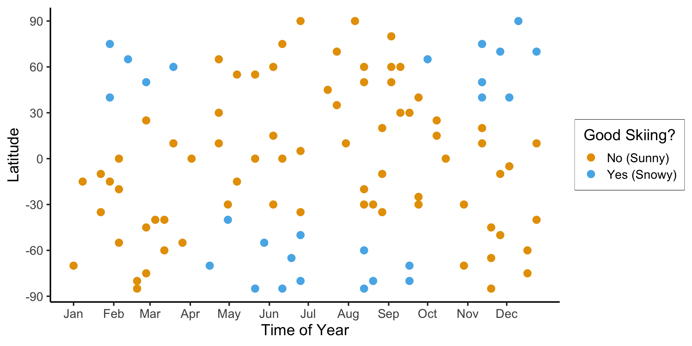
ski_sample |> count(good_skiing)# A tibble: 2 × 2
good_skiing n
<lgl> <int>
1 FALSE 66
2 TRUE 34Let’s think through two choices for the first split:
\(\text{longitude} \geq -30\):
ski_sample <- ski_sample |> mutate(
lon_gt_n30 = longitude >= -30
)
ski_sample |> group_by(lon_gt_n30) |> count(good_skiing)# A tibble: 4 × 3
# Groups: lon_gt_n30 [2]
lon_gt_n30 good_skiing n
<lgl> <lgl> <int>
1 FALSE FALSE 17
2 FALSE TRUE 19
3 TRUE FALSE 49
4 TRUE TRUE 15This gives us the rule
\[ \widehat{C}(x) = \begin{cases} 0 &\text{if }\text{longitude} \geq -30, \\ 0 &\text{otherwise} \end{cases} \]
\(\text{month} < \text{October}\)
ski_sample <- ski_sample |> mutate(
month_lt_oct = day < ymd('2023-10-01')
)
ski_sample |> group_by(month_lt_oct) |> count(good_skiing)# A tibble: 4 × 3
# Groups: month_lt_oct [2]
month_lt_oct good_skiing n
<lgl> <lgl> <int>
1 FALSE FALSE 16
2 FALSE TRUE 7
3 TRUE FALSE 50
4 TRUE TRUE 27This gives us the rule
\[ \widehat{C}(x) = \begin{cases} 0 &\text{if }\text{month} < \text{October}, \\ 0 &\text{otherwise} \end{cases} \]
So, if we judge purely on acuracy scores… it seems like we’re not getting anywhere here (but, we know we are getting somewhere!)
import pandas as pd
import numpy as np
import sklearn
from sklearn.tree import DecisionTreeClassifier
sklearn.set_config(display='text')
ski_df = pd.read_csv("assets/ski.csv")
ski_df['good_skiing'] = ski_df['good_skiing'].astype(int)
X = ski_df[['day_num', 'longitude']]
y = ski_df[['good_skiing']].values
dtc = DecisionTreeClassifier(
criterion = "entropy"
)
dtc.fit(X, y)DecisionTreeClassifier(criterion='entropy')sklearn.tree.plot_tree(dtc)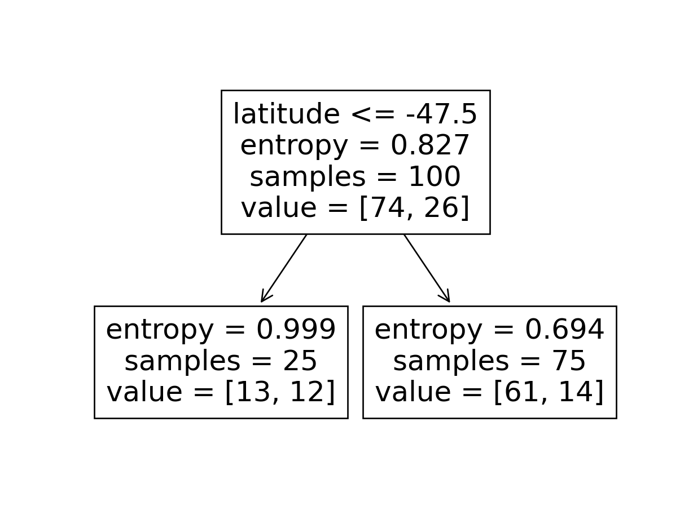
#format_snow <- function(x) sprintf('%.2f', x)
format_snow <- function(x) round(x, 2)
ski_sample['snowfall_str'] <- sapply(ski_sample$snowfall, format_snow)
#ski_df |> head()
#print(nrow(ski_df))
ggplot(ski_sample, aes(x=day, y=longitude, label=snowfall_str)) +
geom_text(size = 6) +
dsan_theme() +
labs(
x = "Time of Year",
y = "Longitude",
shape = "Good Skiing?"
) +
scale_shape_manual(values=c(1, 3)) +
scale_x_continuous(
breaks=c(ymd('2023-01-01'), ymd('2023-02-01'), ymd('2023-03-01'), ymd('2023-04-01'), ymd('2023-05-01'), ymd('2023-06-01'), ymd('2023-07-01'), ymd('2023-08-01'), ymd('2023-09-01'), ymd('2023-10-01'), ymd('2023-11-01'), ymd('2023-12-01')),
labels=c("Jan", "Feb", "Mar", "Apr", "May", "Jun", "Jul", "Aug", "Sep", "Oct", "Nov", "Dec")
) +
scale_y_continuous(breaks=c(-90, -60, -30, 0, 30, 60, 90))
library(tidyverse)
library(latex2exp)
expr_pi2 <- TeX("$\\frac{\\pi}{2}$")
expr_pi <- TeX("$\\pi$")
expr_3pi2 <- TeX("$\\frac{3\\pi}{2}$")
expr_2pi <- TeX("$2\\pi$")
x_range <- 2 * pi
x_coords <- seq(0, x_range, by = x_range / 100)
num_x_coords <- length(x_coords)
data_df <- tibble(x = x_coords)
data_df <- data_df |> mutate(
y_raw = sin(x),
y_noise = rnorm(num_x_coords, 0, 0.15)
)
data_df <- data_df |> mutate(
y = y_raw + y_noise
)
#y_coords <- y_raw_coords + y_noise
#y_coords <- y_raw_coords
#data_df <- tibble(x = x, y = y)
reg_tree_plot <- ggplot(data_df, aes(x=x, y=y)) +
geom_point(size = g_pointsize / 2) +
dsan_theme("half") +
labs(
x = "Feature",
y = "Label"
) +
geom_vline(
xintercept = pi,
linewidth = g_linewidth,
linetype = "dashed"
) +
scale_x_continuous(
breaks=c(0,pi/2,pi,(3/2)*pi,2*pi),
labels=c("0",expr_pi2,expr_pi,expr_3pi2,expr_2pi)
)
reg_tree_plot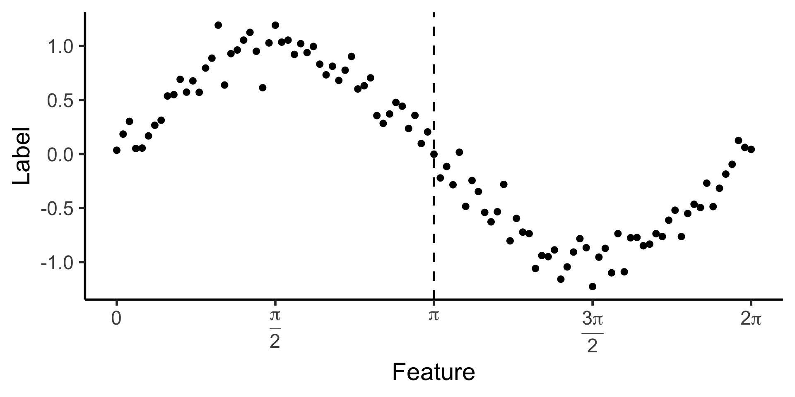
library(ggtext)
# x_lt_pi = data_df |> filter(x < pi)
# mean(x_lt_pi$y)
data_df <- data_df |> mutate(
pred_sq_err0 = (y - 0)^2
)
mse0 <- mean(data_df$pred_sq_err0)
mse0_str <- sprintf("%.3f", mse0)
reg_tree_plot +
geom_hline(
yintercept = 0,
color=cbPalette[1],
linewidth = g_linewidth
) +
geom_segment(
aes(x=x, xend=x, y=0, yend=y)
) +
geom_text(
aes(x=(3/2)*pi, y=0.5, label=paste0("MSE = ",mse0_str)),
size = 10,
#box.padding = unit(c(2,2,2,2), "pt")
)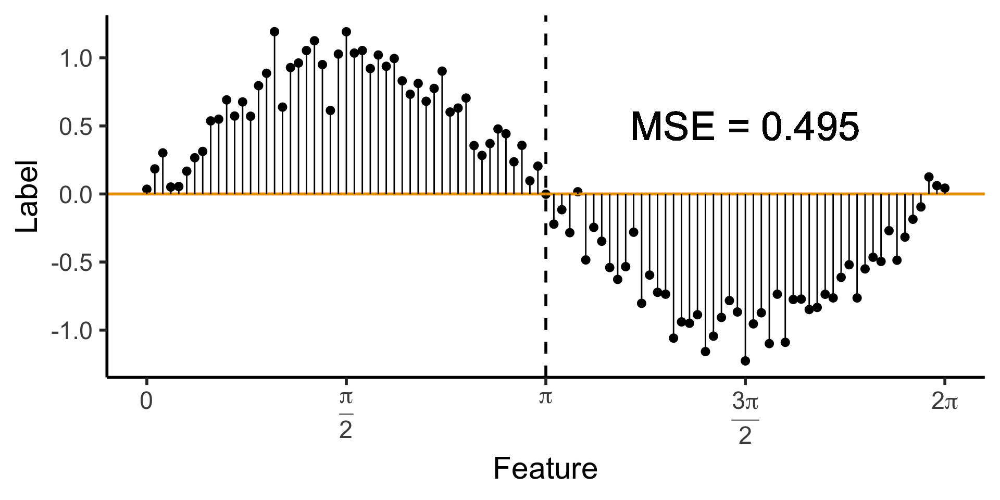
\[ \widehat{y}(x) = \begin{cases} \phantom{-}\frac{2}{\pi} &\text{if }x < \pi, \\ -\frac{2}{\pi} &\text{otherwise.} \end{cases} \]
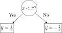
get_y_pred <- function(x) ifelse(x < pi, 2/pi, -2/pi)
data_df <- data_df |> mutate(
pred_sq_err1 = (y - get_y_pred(x))^2
)
mse1 <- mean(data_df$pred_sq_err1)
mse1_str <- sprintf("%.3f", mse1)
decision_df <- tribble(
~x, ~xend, ~y, ~yend,
0, pi, 2/pi, 2/pi,
pi, 2*pi, -2/pi, -2/pi
)
reg_tree_plot +
geom_segment(
data=decision_df,
aes(x=x, xend=xend, y=y, yend=yend),
color=cbPalette[1],
linewidth = g_linewidth
) +
geom_segment(
aes(x=x, xend=x, y=get_y_pred(x), yend=y)
) +
geom_text(
aes(x=(3/2)*pi, y=0.5, label=paste0("MSE = ",mse1_str)),
size = 9,
#box.padding = unit(c(2,2,2,2), "pt")
)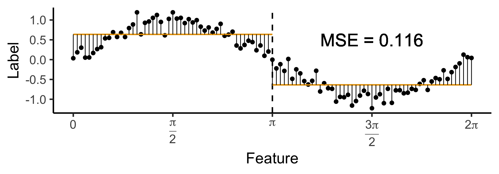
\[ \widehat{y}(x) = \begin{cases} \phantom{-}\frac{9}{4\pi} &\text{if }x < \frac{2\pi}{3}, \\ \phantom{-}0 &\text{if }\frac{2\pi}{3} \leq x \leq \frac{4\pi}{3} \\ -\frac{9}{4\pi} &\text{otherwise.} \end{cases} \]

cut1 <- (2/3) * pi
cut2 <- (4/3) * pi
pos_mean <- 9 / (4*pi)
get_y_pred <- function(x) ifelse(x < cut1, pos_mean, ifelse(x < cut2, 0, -pos_mean))
data_df <- data_df |> mutate(
pred_sq_err1b = (y - get_y_pred(x))^2
)
mse1b <- mean(data_df$pred_sq_err1b)
mse1b_str <- sprintf("%.3f", mse1b)
decision_df <- tribble(
~x, ~xend, ~y, ~yend,
0, (2/3)*pi, pos_mean, pos_mean,
(2/3)*pi, (4/3)*pi, 0, 0,
(4/3)*pi, 2*pi, -pos_mean, -pos_mean
)
reg_tree_plot +
geom_segment(
data=decision_df,
aes(x=x, xend=xend, y=y, yend=yend),
color=cbPalette[1],
linewidth = g_linewidth
) +
geom_segment(
aes(x=x, xend=x, y=get_y_pred(x), yend=y)
) +
geom_text(
aes(x=(3/2)*pi, y=0.5, label=paste0("MSE = ",mse1b_str)),
size = 9,
#box.padding = unit(c(2,2,2,2), "pt")
)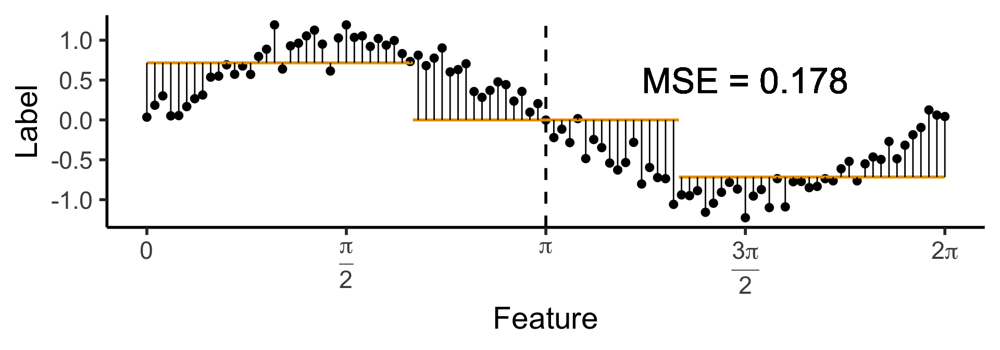
\[ \widehat{y}(x) = \begin{cases} \phantom{-}0.695 &\text{if }x < (1-c)\pi, \\ \phantom{-}0 &\text{if }(1-c)\pi \leq x \leq (1+c)\pi \\ -0.695 &\text{otherwise,} \end{cases} \]
with \(c \approx 0.113\), gives us:

c <- 0.113
cut1 <- (1 - c) * pi
cut2 <- (1 + c) * pi
pos_mean <- 0.695
get_y_pred <- function(x) ifelse(x < cut1, pos_mean, ifelse(x < cut2, 0, -pos_mean))
data_df <- data_df |> mutate(
pred_sq_err1b = (y - get_y_pred(x))^2
)
mse1b <- mean(data_df$pred_sq_err1b)
mse1b_str <- sprintf("%.3f", mse1b)
decision_df <- tribble(
~x, ~xend, ~y, ~yend,
0, cut1, pos_mean, pos_mean,
cut1, cut2, 0, 0,
cut2, 2*pi, -pos_mean, -pos_mean
)
reg_tree_plot +
geom_segment(
data=decision_df,
aes(x=x, xend=xend, y=y, yend=yend),
color=cbPalette[1],
linewidth = g_linewidth
) +
geom_segment(
aes(x=x, xend=x, y=get_y_pred(x), yend=y)
) +
geom_text(
aes(x=(3/2)*pi, y=0.5, label=paste0("MSE = ",mse1b_str)),
size = 9,
#box.padding = unit(c(2,2,2,2), "pt")
)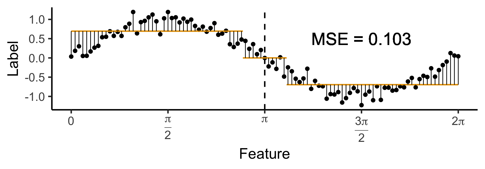
DecisionTreeClassifier and DecisionTreeRegressor classes!| Player | Skill |
|---|---|
| Larry “Lefty” Lechuga | Always hits 5cm left of bullseye |
| Rico Righty | Always hits 5cm right of bullseye |
| Lil Uppy Vert | Always hits 5cm above bullseye |
| Inconsistent Inkyung | Hits bullseye 50% of time, other 50% hits random point |
| Diagonal Dave | Always hits 5cm above right of bullseye |
| Dobert Downy Jr. | Always hits 5cm below bullseye |
| Gregor “the GOAT” Gregorsson | Hits bullseye 99.9% of time, other 0.1% hits random point |
| Craig | Top 25 Craigs of 2023 |


\[ \mathbf{\Sigma}' = \mathbf{V}\mathbf{\Sigma}\mathbf{V}^{-1}. \]